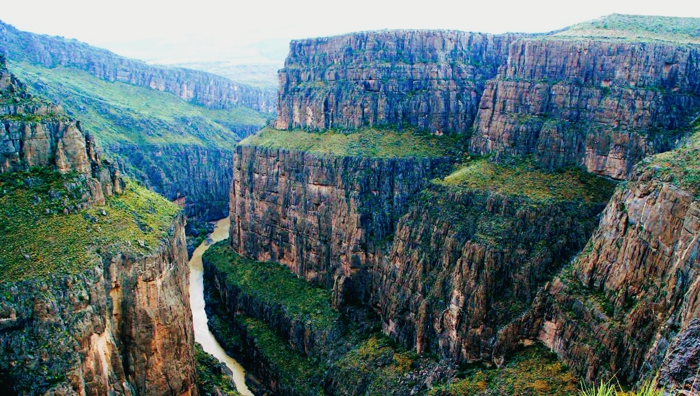

Chihuahua

En donde la historia se conoce con canciones
El estado más grande de la República Mexicana, forma parte del desierto más grande de toda América del Norte, su capital, que lleva el mismo nombre, concentra un pasado revolucionario que resuena
en cada uno de sus corridos, donde la historia toma forma de canción y en el que sus museos, monumentos, y construcciones, narran las batallas ganadas, la presencia de la fe y la influencia
arquitectónica que se resiste a perder vigencia..
Atractivos Turisticos
Cañon del Peguis

A 40 kilómetros de Ojinaga, en la carretera Chihuahua – Ojinaga se encuentra este lugar que toma su nombre de un ave que lo habita. Cuenta con 16 kilómetros de largo y una profundidad de hasta 350 metros,
paredes calcáreas totalmente verticales y el río Conchos cruza en sus profundidades. En su río se puede practicar kayak y es ideal para la práctica del rafting y cañonismo. También hay pozas alrededor, donde
se puede nadar y algunas cuevas para explorar. Además cuenta con una gran extensión de boulders o grandes piedras que constituyen todo un reto para los amantes de la escalada. Alberga algunas pinturas
rupestres con formas geométricas que datan de miles de años atrás. Hay un paraje conocido como El Salto en donde podrás encontrar la típica vegetación desértica de biznagas y nopales junto con algunas piedras.
Paquimé

Paquimé es una zona arqueológica de la Cultura de Paquimé, está localizada aproximadamente a 260 km al noroeste de la ciudad de Chihuahua, México, a medio kilómetro del poblado de Casas Grandes y a 5 kilómetros de la ciudad de Nuevo Casas Grandes.
Lobo Mexicano